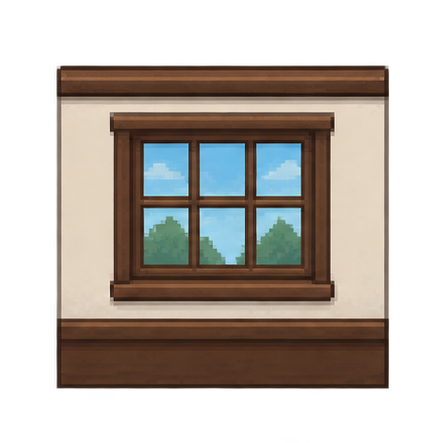
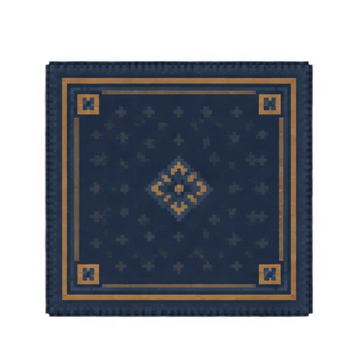
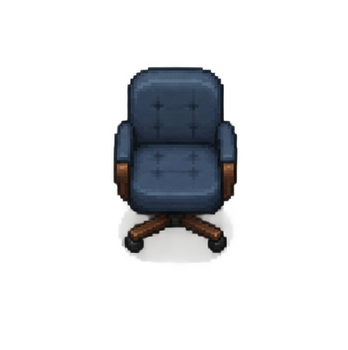

0A / NORMALIZED CORE TEST
One grid. One camera.
The minimum room-source proof: an 8 × 6 logical grid using only the normalized core. Fine grid lines and anchors are intentionally visible here; they do not belong in the product.



- Floor
- Repeated core tile, 8 × 4 patch
- Anchors
- Bottom-center ground point, shown only for QA
- Scale
- All furniture shares the same source-cell height